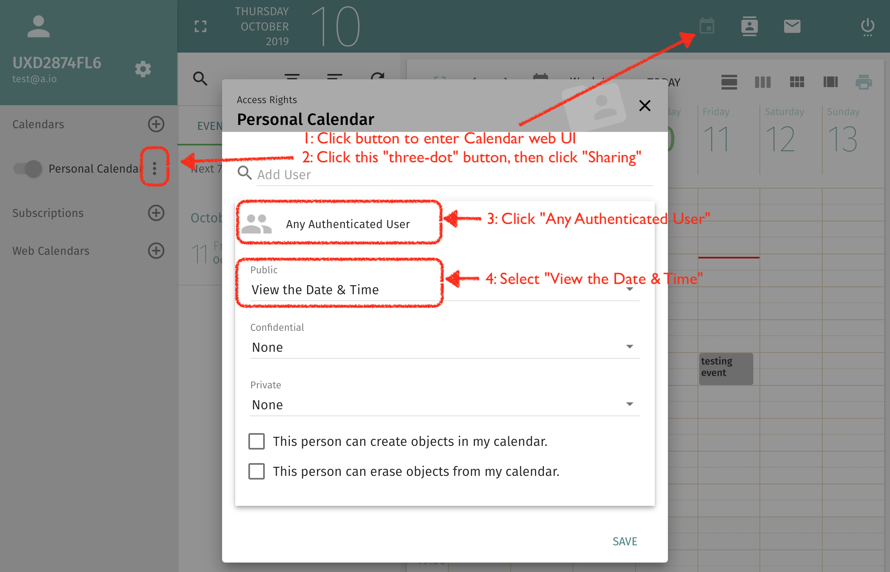

If you want to let others to check your free/busy availability while inviting you to attend some calendar event, you need to grant one permission of your calendar to others.
Let's use calendar Personal Calendar for example, you need to grant
View the Date & Time permission for your public calendar events.

After granted the permission, when other user (hosted on same server) is creating calendar event and input your email address as attendee, he can see your free/busy availability like this: